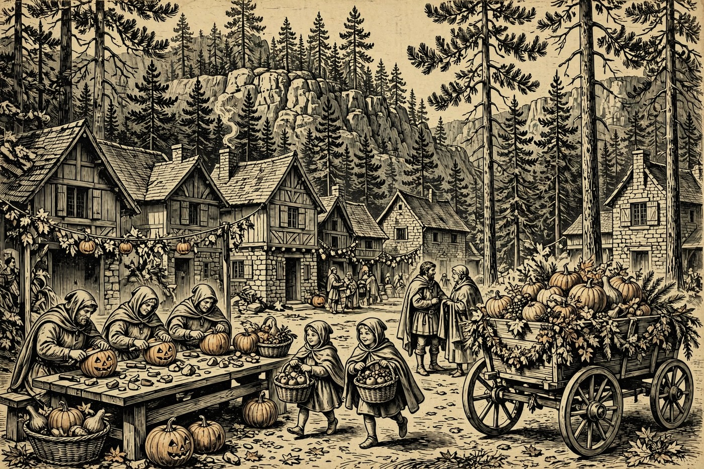
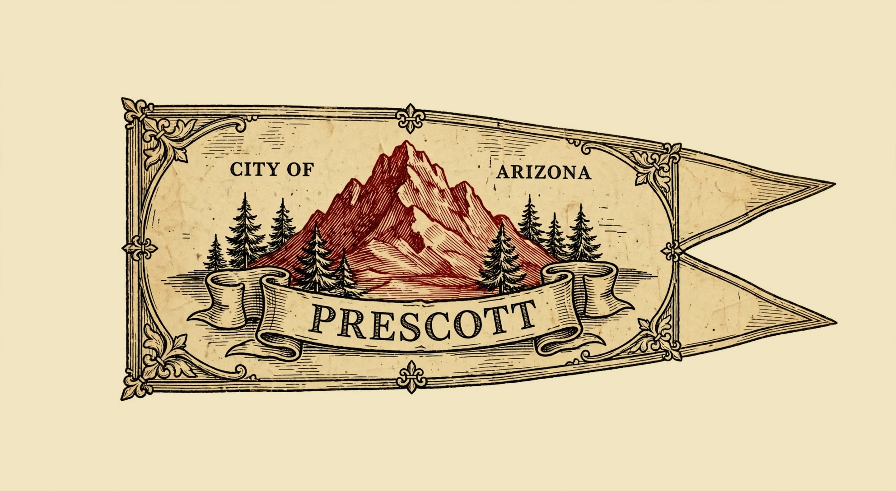

Hail, wayfarer, and good Tirdas morning to you — the sun is up over the Rim, the pines stand bright and still, and Mogollon’s Hearth sends warm greetings on a sunny day that tops out at 68 degrees. PAYSON — The big good-news story in the Hold is the new Tonto Apache Pub, on Highway 87 at Mile Marker 251, on the left side of the Mazatzal Hotel and Casino building with its own outside entrance. The Payson Roundup reports it opened to crowds through its opening weekend — folks stopped in Friday, Oct. 9 and came right back Saturday, Oct. 10, rainy weather and all. The pub’s own page promises premium craft beers, superior cocktails, gourmet plates, and every screen a window to the game. Beyond the pub, Halloween week is upon us: trail work in Pine today, music in Prescott tonight, and a Saturday full of trunk-or-treats, haunted forts, and costumed fun from Camp Verde to Sedona.
Happening in the Holds Today
 Payson— Payson Public Library day — Tai Chi at 9 in the morning and Sit and Stitch from 2 to 5 in the afternoon, at the library on North McLane Road. Tai Chi is a gentle way to start a sunny Tirdas, all slow moves and deep breaths under the pines. Sit and Stitch brings the needleworkers together for an afternoon of yarn, talk, and steady progress. Call the library at 928-474-9260 to register. A fine, calm pair of doings for guests who like their days unhurried.
Payson— Payson Public Library day — Tai Chi at 9 in the morning and Sit and Stitch from 2 to 5 in the afternoon, at the library on North McLane Road. Tai Chi is a gentle way to start a sunny Tirdas, all slow moves and deep breaths under the pines. Sit and Stitch brings the needleworkers together for an afternoon of yarn, talk, and steady progress. Call the library at 928-474-9260 to register. A fine, calm pair of doings for guests who like their days unhurried. Pine-Strawberry— Trail Day Volunteer Build in Pine — today from 7 in the morning to noon, off Highway 87 just before Pine. Pine Strawberry Fuel Reduction calls hikers, bikers, runners, and neighbors to help clear brush, move rocks, and shape a trail the whole community will use for years. The work also opens better access for fire crews, so every hour given does double duty. Bring water, sunscreen, gloves if you have them, and sturdy shoes — tools are provided and no experience is needed. Email trails@psfuelreduction.org for directions and details.
Pine-Strawberry— Trail Day Volunteer Build in Pine — today from 7 in the morning to noon, off Highway 87 just before Pine. Pine Strawberry Fuel Reduction calls hikers, bikers, runners, and neighbors to help clear brush, move rocks, and shape a trail the whole community will use for years. The work also opens better access for fire crews, so every hour given does double duty. Bring water, sunscreen, gloves if you have them, and sturdy shoes — tools are provided and no experience is needed. Email trails@psfuelreduction.org for directions and details.
Prescott— Open Mic hosted by Greystone — tonight from 5:30 to 8:30 in Prescott. Local singers, pickers, and poets take their turn in the spotlight while the crowd settles in with supper and something warm. Open mics are where a Hold hears itself think out loud — part concert, part town meeting with better tunes. Arrive early if you mean to perform, and stay late for the surprises. A merry way to close a sunny day on the road.
The Days Ahead
- Wed, Oct. 28— Wednesday Music at Back Alley Wine Bar in Prescott, 5:30 to 8:30 in the evening, with Wednesday karaoke following at 7. Midweek music is a fine excuse for Valley Dwellers to linger one more night under the pines. Expect an easy crowd, local voices, and songs everybody half-knows and fully enjoys. Sing along or simply listen — both are honored customs of the mead hall.
- Thu, Oct. 29— Marigold Mural Project begins at Tlaquepaque in Sedona, running 11 to 5 each day through the weekend on Calle Independencia. Visitors paint a tribute to a loved one on a long community remembrance wall, with murals from earlier years standing nearby for heart and inspiration. Brushes and paints are supplied, so you need only bring a name and a memory. It is one of the gentlest, kindest doings of the whole season.
- Fri, Oct. 30— Prescott — The Rough Rider opens at Courthouse Square in Prescott, a three-day gravel bike race running Oct. 30 through Nov. 1. Riders take on three stages of high-desert roads based in historic downtown, all grit, grind, and glory. Spectators get the best of it — fast starts, dusty finishes, and a square full of food and cheer. Come wave the riders home like bards greeting heroes.
- Sat, Oct. 31— Camp Verde Trunk or Treat takes over Main Street in Camp Verde from 5 to 7 in the evening. Businesses, groups, and neighbors line the street with decorated cars, trucks, and booths, handing out candy to a crowd the town counts in the thousands. There is a decorating contest, haunted houses, games, music, and a haunted jail for the brave. Costumes are very much the order of the night. Bring a bag with room to spare.— A Haunting at the Fort at Fort Verde State Historic Park, 6 to 8 in the evening. This lantern-lit walk lets you glimpse the old fort after hours, hear ghost stories, and visit with those who still call the fort home after 150 years. There is no extra cost beyond regular park admission. It is spooky in the friendly, storyteller way — perfect after the trunk-or-treat crowds thin.— Uptown Trick or Treat in Sedona, 5 to 8 in the evening along Uptown’s main street. Shops hand out candy as costumed families wander from door to door under the red rocks. It is Sedona’s biggest Halloween gathering and a joyful one, all glow and giggles. Come early for parking and stay for the parade of tiny dragons and knights.— Witch Way to the Spring? A Halloween Cleanup at See Spring Trail in Christopher Creek, 10:30 in the morning to 3:30 in the afternoon. The Women’s Wine Hiking Society leads a spooky-season cleanup hike to keep the trail from looking like a graveyard. Costumes are welcome, good deeds are the point, and the spring rewards the walk at the end. A fine way to earn your evening candy.
- Sun, Nov. 1— Día de los Muertos at Tlaquepaque in Sedona, with altars, music, and cultural performances honoring loved ones who have died. The courtyards fill with marigolds, candles, and families remembering together in the open air. It follows the Marigold Mural Project’s remembrance wall, so the weekend reads as one long, kind act of memory. Guests who go will come home with full hearts.